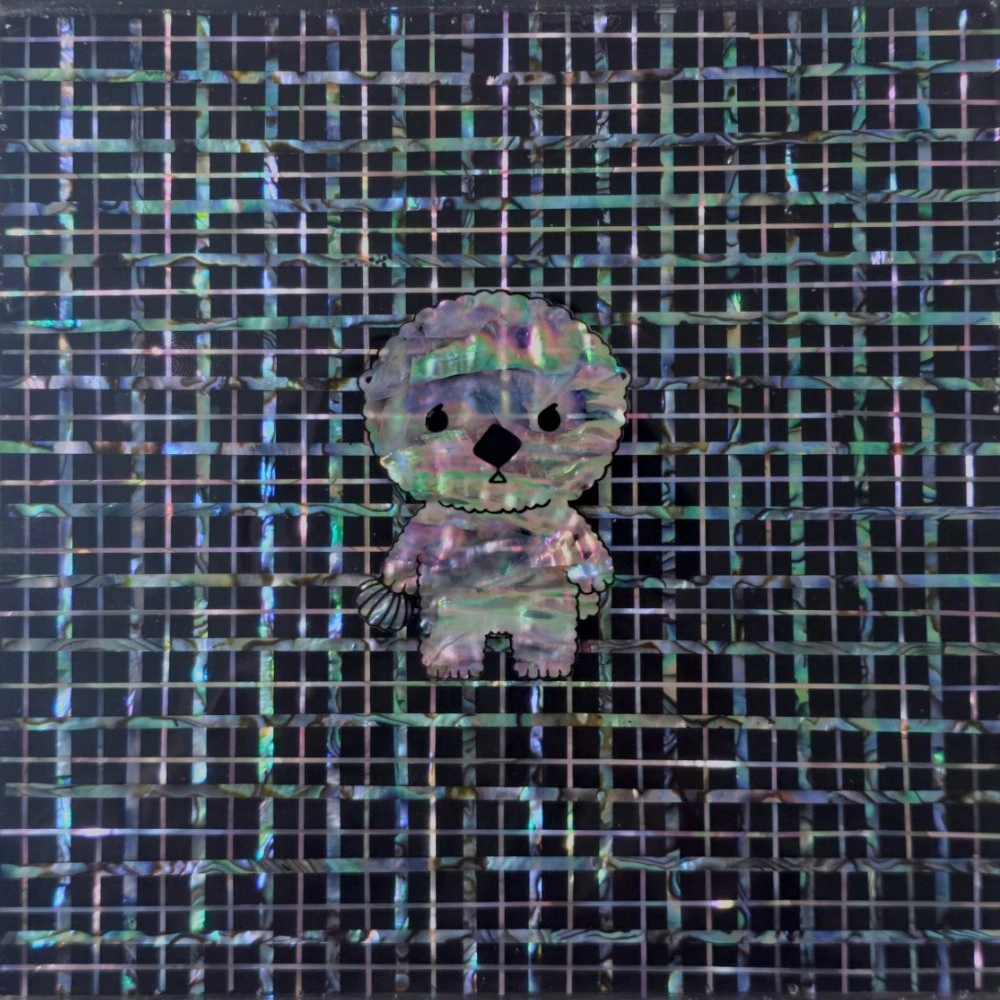

권리누적: 이차원에서 삼차원으로Accumulation of Rights: From 2D to 3D
Accumulation of Rights: From 2D to 3D권리누적: 이차원에서 삼차원으로
천연자개, 옻칠, 삼베 등 · 15 × 15 cm · 2025Natural mother-of-pearl, lacquer, hemp, etc. · 15 × 15 cm · 2025
자개와 레진의 반복적 적층(Layering)으로 구현한 견고한 그리드는 사회의 규율이자 작가가 추구하는 질서를 상징한다. 평면의 권리가 입체적 실체로 축적되는 과정을 구조적으로 드러낸 작품이다.Built through the repeated layering of mother-of-pearl and resin, this sturdy grid symbolizes both the discipline of society and the order the artist pursues. It structurally reveals a process in which a right, once flat and abstract, accumulates into a three-dimensional, tangible form.
전시 이력Exhibitions
- 2026.02.05 – 2026.02.09 9인9색전, 갤러리가우디움, 서울, 대한민국2026.02.05 – 2026.02.09 Nine Artists, Nine Colors, Gallery Gaudium, Seoul, KR
- 2025.12.24 – 2025.12.28 서울아트쇼 2025, 코엑스, 서울, 대한민국2025.12.24 – 2025.12.28 SEOUL ART SHOW 2025, COEX, Seoul, KR